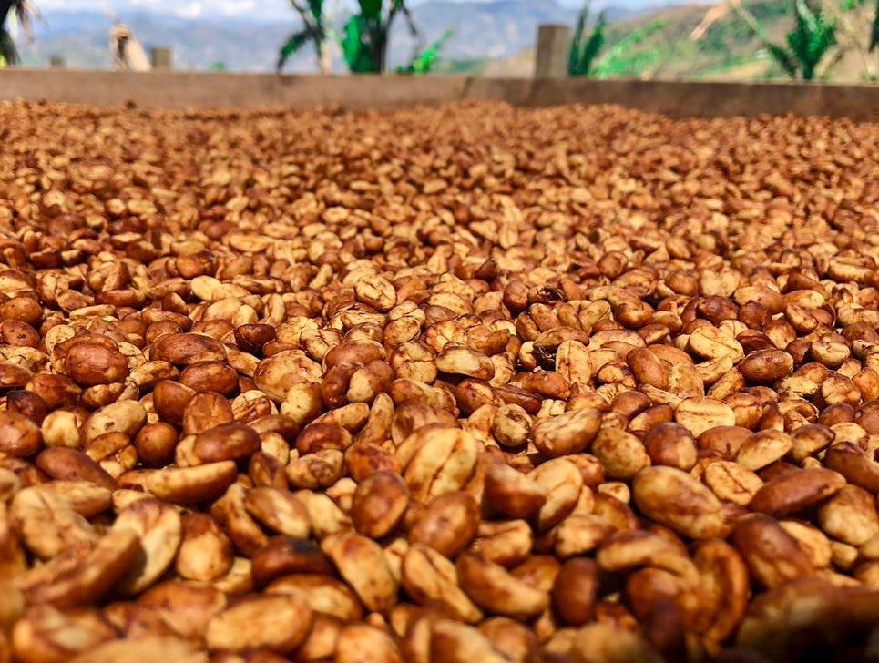

Mezcla de granos de café especialidad, origen Tarrazú, 100% Arábica de las variedades Caturra y Catuai, cultivado y procesado en la finca Juanachute, en el cantón de León Cortés Castro a una altitud de 1800 m.s.n.m en el territorio costarricense.
Este café es secado bajo el sol sin su cáscara, manteniendo el mucílago que contiene una gran cantidad de sacarosa y ácidos, lo cual da origen al nombre del proceso Honey y su sabor inigualable.

Sus cualidades de dulzor y acidez balanceada con notas afrutadas, brinda una experiencia postgusto ligera, lo cual lo hace único y exquisito al paladar.
Para su preparación: Utilizar 6g de café por cada taza de agua.
Presentaciones de: 300g 500g 1000g
-Fin de la página-